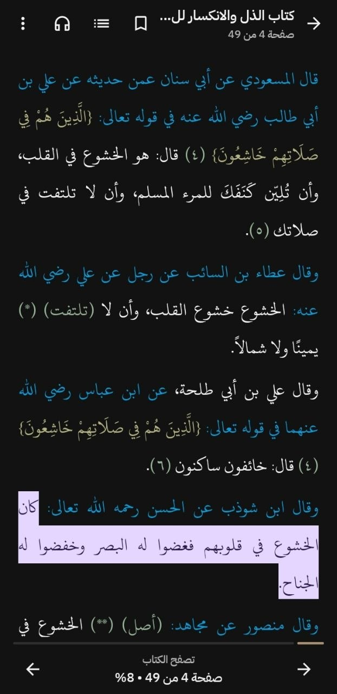
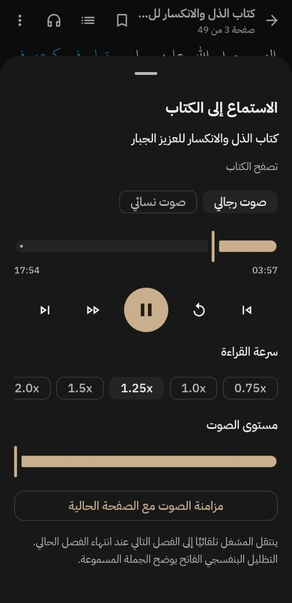
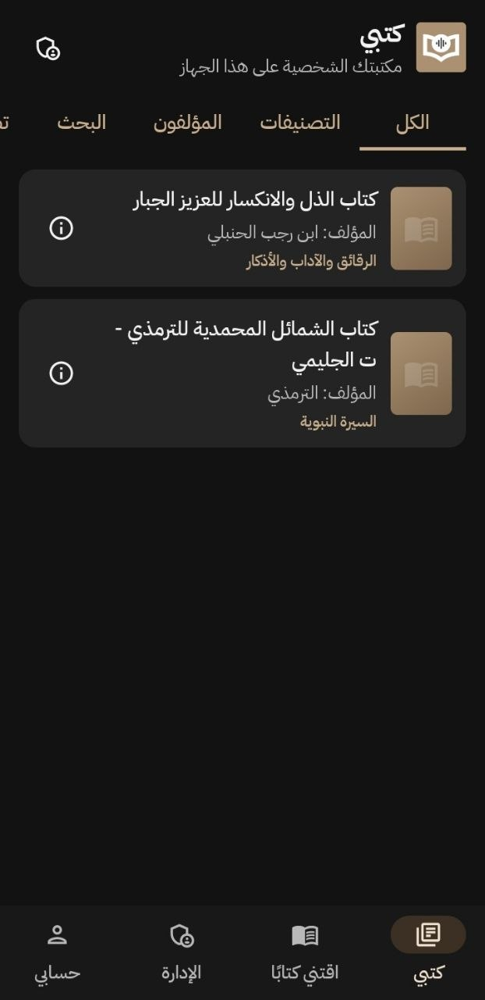
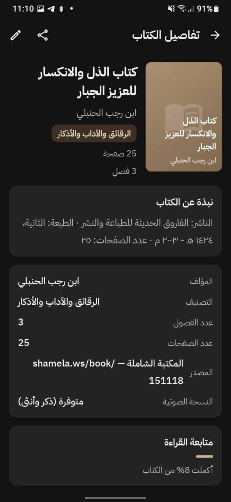

إتاحة جميع كتب المكتبة الشاملة
توفر جميع كتب المكتبة الشاملة. مع توفير ميزات إضافية لا توجد في الشاملة.
تطبيق أندرويد للقراءة والاستماع إلى الكتب الإسلامية
مكتبة إسلامية رقمية، لتسهيل طلب العلم الشرعي
اقرأ، ظلِّل، دوِّن، واستمع إلى كتب المكتبة الشاملة بالذكاء الاصطناعي. في تجربة صُمِّمت لتناسب رحلتك في طلب العلم.
ⓘ التطبيق خاضع دائمًا للتطوير والتحسين. قد تجد عطلًا في الصوت في بعض الكتب، أو عدم توفر صوت الأنثى في بعضها، ونحن دائمًا نعمل على رفع الكتب والأصوات بشكل صحيح ويلبِّي توقعات القرَّاء.

عن التطبيق
«اقرأ عليَّ» تطبيق أندرويد عربي بالكامل للقراءة والاستماع إلى الكتب الإسلامية. يجمع كتب المكتبة الشاملة في تجربة محسنة في القراءة، وإضافة ميزة الاستماع للكتب بالذكاء الاصطناعي.
قارئ التطبيق يمنحك تظليلًا بخمسة ألوان، وملاحظات، وإشارات مرجعية، وفهرسًا تلقائيًا، وثلاث سمات قراءة للون الصفحات. وإلى جانب القراءة، يمكنك الاستماع بصوت رجالي أو نسائي مع مزامنة تُبرز الجملة المقروءة، وحفظ تلقائي لموضع القراءة والاستماع.
يستورد التطبيق كتب المكتبة الشاملة بنصها الكامل وتشكيلها وهوامشها، ليجمع التراث الذي تحب في مكان واحد، مع مميزات تحسن تجربة القرَّاء.
المميزات
توفر جميع كتب المكتبة الشاملة. مع توفير ميزات إضافية لا توجد في الشاملة.
ثلاث سمات قراءة، تحكّم بحجم الخط، فهرس تلقائي، وملء الشاشة — مع حفظ موضعك تلقائيًا.
خمسة ألوان للتظليل، ملاحظات مرتبطة بالصفحة، إشارات مرجعية، ونسخ ومشاركة للنص.
صوت رجالي وآخر نسائي، مع سرعة تشغيل ومستوى صوت وانتقال تلقائي إلى الفصل التالي.
تُظلَّل الجملة المسموعة بلون بنفسجي مميّز، ويُحفظ موضع الاستماع لكل كتاب وصوت.
واجهة RTL بخط IBM Plex Sans Arabic، ووضعان فاتح وداكن يتبعان اختيارك.
لمحة من التطبيق
لقطات من الواجهة الداكنة: قارئ مريح، مشغّل صوت، مكتبة شخصية، وتفاصيل الكتب.



اللقطات من الواجهة الداكنة، ويدعم التطبيق الوضعين الفاتح والداكن.
أسئلة شائعة
إجابات مباشرة عن التحميل والعمل دون اتصال وصيغ الكتب والاستماع.
نعم، جزئيًا: الكتب التي حمّلتها تُقرأ دون اتصال، ويمكنك تحميل الصوت داخل التطبيق للاستماع إليه دون اتصال. أما تحميل كتاب جديد أو صوت جديد فيحتاج إلى اتصال بالإنترنت.
يدعم التطبيق حاليًا كتب المكتبة الشاملة بنصها الكامل وتشكيلها وهوامشها، ولا يدعم صيغًا أخرى مثل PDF في الوقت الحالي.
نعم، الاستماع مجاني بالكامل، بصوت رجالي أو نسائي، دون اشتراك أو دفع.
النص كامل كما في المكتبة الشاملة، مع التشكيل والهوامش، دون اختصار.
يعمل على أندرويد 8.0 وما فوق.
نزّل ملف APK من أعلى الصفحة، ثم افتحه واسمح بتثبيت التطبيقات من هذا المصدر إن طلب منك النظام ذلك.
تواصل
سؤال عن التطبيق، ملاحظة على تجربة القراءة، أو رغبة في المساهمة؟ اختر الطريقة الأنسب لك.
المشروع يُحدَّث باستمرار على مُرتكَز.